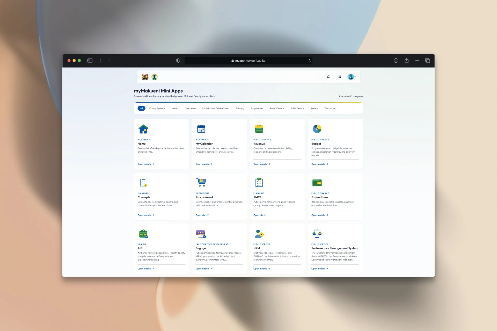

County ERP

Government of Makueni County · Launched August 2026
myMakueni County ERP
Makueni County ICT, Applications Development
- Overview
-
Makueni County's staff-facing enterprise resource planning platform, built in-house and deployed on 26 August 2026. It replaces the separate departmental systems the county previously ran, each with its own budget, support arrangements and reporting, with one platform, one login and one support function. Staff sign in and open modules from a Mini Apps directory: 31 modules in 10 categories, 18 hosted inside the ERP and 13 county systems linked from it.
- Public Finance: Revenue, Budget, Expenditure
- Public Service: HRM, Performance Management, Public Service Board
- Planning: Concepts, PMTS
- Health: AIE, Ambulance
- Participatory Development: Engage
- Operations: Procurement
- Programmes: KWASH
- Workspace: Home, Calendar, Repository
- System: Configs, Reports
- County Systems: 13 linked sector sites
- My role
- Part of the team that designed and built the platform. I engineered the backend services and data models for the Public Finance modules: revenue billing and receipting, programme-based budget formulation and absorption tracking, and expenditure requisitions through vouchers to payment. I built the REST integrations with banks and payment gateways and optimised the queries behind the cross-module Reports. The platform enforces TLS, CSRF protection, role-based access managed through Configs and an immutable audit log of financial transactions, and is built to the Kenya Data Protection Act 2019 and the Public Finance Management Act 2012.
- Technology
Internal staff system, not publicly accessible